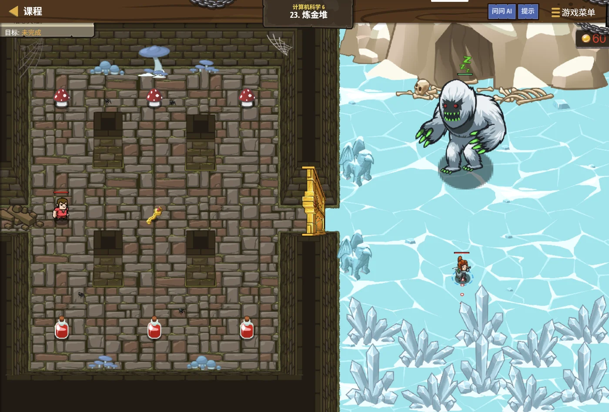

故事：炼金台上堆着一摞材料，顺序不能乱：
下面的必须先处理，上面的才能拿。
贺舒曼看了看：这不就是栈吗？但你要注意一件事——
每一轮都从头扫一遍整摞，效率会很低。
扣哒考级 · GESP C++ 八级 · 第 7 单元 | 寂灭王座 THE THRONE
秤与沙漏 算法效率分析
Algorithm Efficiency Analysis

贺舒曼
镜中先知 · 你的向导
王座旁的石桌上放着一杆铜秤和一只沙漏。
守门人指着两段程序：这两段都能算出答案。但一个用了一刻钟，一个只用了三息。
你问怎么才能提前知道快慢。
贺舒曼说：不用真跑。数一数它要循环多少次，心里就有数了。
守门人指着两段程序：这两段都能算出答案。但一个用了一刻钟，一个只用了三息。
你问怎么才能提前知道快慢。
贺舒曼说：不用真跑。数一数它要循环多少次，心里就有数了。
贺舒曼 · 镜中先知
我们从五级开始就在说"这个算法快、那个慢"。这一单元，把这件事讲成一套可操作的方法。它不会教你写新算法，但会让你在动手之前就知道：这个做法，数据一大还能不能跑得动。
这是八级最实用的一课。
assets/illustrations/py-L8-07-00_scale_hourglass.webp
【配图位】寂灭王座前的巨大前厅：一座青铜天平悬在半空，两端的托盘上各站着一名守卫，旁边立着一只和一人高的沙漏，金沙正缓缓落下；厅顶的赤金纹章把阴影投在地面上，英雄站在天平正下方仰头观察。
0 单元导语与目标
Unit Overview
0.1 学习目标
0.2 考纲对照
1学完这个单元，你将能……
- 说出大 O 记法的含义
- 快速估算一段代码的时间复杂度
- 记住常见复杂度的快慢排行
- 根据数据规模判断算法是否可行
- 初步估算空间复杂度
- 在"更快的算法"和"更简单的写法"之间做取舍
2对标 GESP 考纲（C++ 八级）
- 理解时间复杂度与空间复杂度的基本概念
- 掌握常见复杂度量级的比较与估算方法
- 能根据数据规模选择合适复杂度的算法
- 考核目标：能分析给定程序的时间复杂度并判断是否可行
1 为什么要称一称
Why Measure
1.1 求 1 到 n 的和两种做法
同样一个问题，两种做法可能差几千倍。看一个具体例子：
求 1 到 n 的和，两种做法
C++
// 做法一：循环累加
long long total = 0;
for (int i = 1; i <= n; i++) {
total = total + i;
}
// n = 1 亿时，要循环 1 亿次 → 大概几秒钟
// 做法二：公式
long long total2 = (1LL + n) * n / 2;
// 不管 n 多大，都是一次乘除 → 瞬间完成
差距 n = 1 亿时，做法一约 100000000 次操作，做法二只有 3 次
1.2 为什么要提前估算
为什么要"提前估算"？
因为程序写完再测已经晚了——如果算法选错，数据一大就必然超时。
而估算只需要看代码结构：数一数循环嵌套的层数、看看每层大概跑多少次。
这份"心算能力"，是八级考试最看重的能力之一。
而估算只需要看代码结构：数一数循环嵌套的层数、看看每层大概跑多少次。
这份"心算能力"，是八级考试最看重的能力之一。
2 大 O 记法
Big-O Notation
2.1 为什么可以忽略常数
大 O 记法只关心"随着数据量 n 变大，运算量增长得有多快"，忽略常数和低次项。
为什么可以忽略常数？
C++
// 两段代码都是"循环 n 次"
for (int i = 0; i < n; i++) {
; // 1 次操作
}
for (int i = 0; i < n; i++) {
a = a + 1; // 3 次操作
b = b * 2;
c = c - 1;
}
// 前者 1n 次，后者 3n 次
// 但大 O 都记作 O(n) —— 因为 n 变大时，3 这个倍数根本不算什么
结论 大 O 看的是"趋势"，不是"具体几次"
2.2 三条化简规则
三条化简规则：
① 去掉常系数：
② 只保留最高次项：
③ 常数就是常数：
因为 n 足够大时，起决定作用的一定是增长最快的那一项。
① 去掉常系数：
3n → O(n)；② 只保留最高次项：
n² + n + 5 → O(n²)；③ 常数就是常数：
100 次操作 → O(1)。因为 n 足够大时，起决定作用的一定是增长最快的那一项。
3 常见复杂度排行
Complexity Ranking
3.1 复杂度增长曲线
图 2（SVG）：复杂度增长曲线——越往右上的越危险
| 复杂度 | 名字 | 典型算法 | n = 10 万时 |
|---|---|---|---|
| O(1) | 常数级 | 数组按下标取值、哈希查找 | 1 次 |
| O(log n) | 对数级 | 二分查找、快速幂 | 约 17 次 |
| O(n) | 线性级 | 一次遍历、求和 | 10 万次 |
| O(n log n) | 线性对数级 | 归并排序、快速排序 | 约 170 万次 |
| O(n²) | 平方级 | 冒泡、选择排序、双重循环 | 100 亿次 |
| O(2ⁿ) | 指数级 | 枚举所有子集 | 天文数字 |
3.2 一条必须记住的分界线
一条必须记住的分界线：
O(n²) 是"能不能用"的分水岭。
· n ≤ 5000 时，O(n²) 还能勉强接受；
· n = 10 万时，O(n²) 大约需要 100 亿次操作——按每秒 1 亿次算， 要跑 100 秒以上，必然超时。
这时候就必须换成 O(n log n) 或 O(n)。
· n ≤ 5000 时，O(n²) 还能勉强接受；
· n = 10 万时，O(n²) 大约需要 100 亿次操作——按每秒 1 亿次算， 要跑 100 秒以上，必然超时。
这时候就必须换成 O(n log n) 或 O(n)。
assets/illustrations/py-L8-07-02_growth_curves.webp
【配图位】王座前厅里立着一座巨大的天平，两侧托盘分别堆着发光的石珠：左边几颗、右边堆成小山；天平旁的石壁上刻着几条上升的曲线，最陡的那条被标红；一名学徒指着曲线比较两条路线的代价。
4 怎么快速估算
How to Estimate
4.1 三道小题辨一辨
| 代码长什么样 | 复杂度 | 怎么看 |
|---|---|---|
| 没有循环，几行语句 | O(1) | 不管 n 多大，都是固定的几步 |
| 一层循环，跑 n 次 | O(n) | 数一层 |
| 两层嵌套循环，各 n 次 | O(n²) | 数两层 |
| 三层嵌套 | O(n³) | 数三层 |
| 循环里每次都减半 | O(log n) | 看循环变量是"除以 2"还是"减 1" |
| 外层 n 次，内层 log n 次 | O(n log n) | 常见于排序 |
| 两层循环但总数有限 | 看总次数 | 不能只看层数，要看真的跑多少次 |
三道小题，辨一辨
C++
// ① 一层循环 → O(n)
for (int i = 0; i < n; i++) {
cout << i << endl;
}
// ② 每次折半 → O(log n)
int i = n;
while (i > 0) {
cout << i << endl;
i = i / 2; // 每次都除以 2
}
// ③ 外层 n 次，内层也只跑 n 次 → O(n²)
for (int i = 0; i < n; i++) {
for (int j = 0; j < n; j++) {
;
}
}
// ④ 外层 n 次，内层从 i 开始 → 总次数 n(n+1)/2 → 还是 O(n²)
for (int i = 0; i < n; i++) {
for (int j = i; j < n; j++) {
;
}
}
要点 关键是看总的执行次数随 n 怎么变，不是机械地数循环层数
5 数据规模对照表
Scale vs Complexity
5.1 数据规模对照表
图 4（SVG）：数据规模与算法复杂度的对应关系
5.2 做题的实用技巧
做题的实用技巧：
题目里给出的数据范围，其实是在暗示你该用什么算法。
· 看到 n ≤ 20，八成要枚举或回溯；
· 看到 n ≤ 10⁵，别写 O(n²)，要往 O(n log n)、O(n) 上想；
· 看到 n ≤ 10³，O(n²) 完全够用，不用想太复杂。
先看数据范围，再想算法——能少走很多弯路。
· 看到 n ≤ 20，八成要枚举或回溯；
· 看到 n ≤ 10⁵，别写 O(n²)，要往 O(n log n)、O(n) 上想；
· 看到 n ≤ 10³，O(n²) 完全够用，不用想太复杂。
先看数据范围，再想算法——能少走很多弯路。
6 空间也要算
Space Complexity
6.1 空间也要算
| 写法 | 空间复杂度 | 说明 |
|---|---|---|
| 只用了几个变量 | O(1) | 和 n 无关 |
| 开了一个长度 n 的列表 | O(n) | 最常见的情况 |
| 开了 n×n 的二维表 | O(n²) | n 大时会爆内存 |
| 递归深度为 n | O(n) | 每一层都要占栈空间 |
| 哈希表存 n 个元素 | O(n) | 用空间换时间 |
6.2 两个容易忽略的点
两个容易忽略的点：
① 递归也占空间——递归深度 n 就要 n 份栈空间； 深度太大（比如 10 万层）会直接报 RecursionError。
② 二维表很占地方——
所以七级学二维 DP 时，我们才提到"滚动数组"这种省空间的技巧。
① 递归也占空间——递归深度 n 就要 n 份栈空间； 深度太大（比如 10 万层）会直接报 RecursionError。
② 二维表很占地方——
n = 10000 时，
n × n 的表有 1 亿个格子，内存根本放不下。所以七级学二维 DP 时，我们才提到"滚动数组"这种省空间的技巧。
assets/illustrations/py-L8-07-03_space_cells.webp
【配图位】一排整齐的石格表示内存：浅蓝的格子装着程序正在用的数据、灰色的格子空着；旁边另一方案只占用两个格子、却要反复搬运同一块石子；一名学徒在两块石板之间来回比对。
7 代码实战
Level Practice
关卡
炼金堆
进入关卡 →思路：用栈来管理这摞材料，每次只看栈顶。 这样的好处是：不需要每次扫描整摞，取用都是 O(1)。

assets/stages/py-L8-07-stage1_alchemy_pile.webp
【关卡截图位】请把《炼金堆》的游戏画面截图放到此处（放入 assets/stages/ 目录，文件名为 py-L8-07-stage1_alchemy_pile.webp）。
重点示例：只操作栈顶，效率最高
C++
vector<int> st;
// 压入材料
for (int mat : materials) {
st.push_back(mat); // O(1)
}
// 逐层处理（只看栈顶）
while (!st.empty()) {
int top = st.back(); // O(1)，不用扫描整摞
st.pop_back();
process(top);
}
要点
push_back 和 pop 都是 O(1)；总复杂度 O(n)
对比一下两种写法：
写法 A（差）：每一轮都从头扫描找该处理的材料 → 总共 O(n²)；
写法 B（好）：用栈，每轮只动栈顶 → 总共 O(n)。
同样一件事，选对结构，效率能差一个量级。 这就是"效率分析"在实战中的价值。
去扣哒世界闯这一关 →
写法 B（好）：用栈，每轮只动栈顶 → 总共 O(n)。
同样一件事，选对结构，效率能差一个量级。 这就是"效率分析"在实战中的价值。
8 常见陷阱
Common Pitfalls

扣哒鸭 · 调试官
复杂度估算的错，全在"数错层数"和"忽略隐藏开销"上。四条，条条都值得记。
1
机械地数循环层数，不看实际次数。

扣哒鸭：两层循环不一定是 O(n²)。
比如
关键是算总的执行次数。
比如
for (int i = 0; i < 10; i++) for (int j = 0; j < n; j++)——
内层跑 n 次，但外层固定 10 次，总次数是 10n，复杂度是 O(n)。关键是算总的执行次数。
正确做法：估算总操作次数随 n 的增长趋势
2
忘了循环里的"隐藏循环"。

扣哒鸭：
写在循环里就成了 O(n²)。换成
x in list 看起来是一行，但它内部要遍历整个列表，
是 O(n)。写在循环里就成了 O(n²)。换成
x in set 才是 O(1)。常见陷阱：列表的
in 是 O(n)，集合/字典的是 O(1)3
只看时间，忘了空间。

扣哒鸭：
时间复杂度过了，空间可能不过。
n = 10 万 时开一个 n × n 的二维表，
就是 100 亿个格子——内存直接爆掉。时间复杂度过了，空间可能不过。
正确做法：两种复杂度都要估
4
以为"跑得快"就等于"复杂度低"。

扣哒鸭：数据小的时候，O(n²) 可能比 O(n log n) 跑得还快——
因为后者常数大。
但数据一大，复杂度低的必胜。 我们要看的是"趋势"，不是"小数据的表现"。
但数据一大，复杂度低的必胜。 我们要看的是"趋势"，不是"小数据的表现"。
正确认识：复杂度衡量的是"增长趋势"
9 题目练习
Practice
第 1 题改编自 2026 年 9 月 · C++ 八级 第 13 题，其余为原创练习题。
改编自 2026 年 9 月 · C++ 八级 · 第 13 题单选题
把下列常见复杂度按渐近增长速度从慢到快排列，正确的是（ ）。
A.O(n²)、O(n log n)、O(n)、O(log n)
B.O(log n)、O(n)、O(n²)、O(n log n)
C.O(log n)、O(n)、O(n log n)、O(n²)
D.O(n log n)、O(log n)、O(n)、O(n²)
B.O(log n)、O(n)、O(n²)、O(n log n)
C.O(log n)、O(n)、O(n log n)、O(n²)
D.O(n log n)、O(log n)、O(n)、O(n²)
查看答案与详解
答案：C。记住这张"速度排行榜"（n → ∞ 时）：
所以题目这四个的正确顺序是 log n → n → n log n → n²，选 C。
怎么记最省事？把 n 代几个值试一下：n = 1024 时，
A、B、D 错：都把某两项的顺序弄反了，最常见的是把
意义：看到 n 最大到 10⁵，就知道 O(n²) 会超时（10¹⁰ 次运算），必须换成 O(n log n) 的算法 —— 这就是"复杂度估算"的用处。
顺带记：一级的
对应小节2 增长速度的比较。
O(1) < O(log n) < O(n) < O(n log n) < O(n²) < O(2ⁿ) < O(n!)所以题目这四个的正确顺序是 log n → n → n log n → n²，选 C。
怎么记最省事？把 n 代几个值试一下：n = 1024 时，
log n = 10、n = 1024、n log n ≈ 10240、n² ≈ 100 万 —— 差距一目了然。A、B、D 错：都把某两项的顺序弄反了，最常见的是把
n log n 与 n 记混。意义：看到 n 最大到 10⁵，就知道 O(n²) 会超时（10¹⁰ 次运算），必须换成 O(n log n) 的算法 —— 这就是"复杂度估算"的用处。
顺带记：一级的
cin/cout 很快，但大规模数据下建议加 ios::sync_with_stdio(false);。对应小节2 增长速度的比较。
原创练习题单选题
下列代码段的时间复杂度是（ ）。
for (int i = 0; i < n; i++)
total = total + a[i];
A.O(1) B.O(log n) C.O(n) D.O(n²)
查看答案与详解
答案：C。一层循环，执行 n 次，O(n)。
记忆：一层循环就是 O(n)。
对应小节4 怎么快速估算。
记忆：一层循环就是 O(n)。
对应小节4 怎么快速估算。
原创练习题单选题
下列代码段的时间复杂度是（ ）。
int i = n;
while (i > 0) {
cout << i << endl;
i = i / 2;
}
A.O(1) B.O(log n) C.O(n) D.O(n²)
查看答案与详解
答案：B。每循环一次，i 就除以 2，
所以循环次数约为 log₂n——这是典型的 O(log n)。
判断标志：循环变量是"乘 2"或"除以 2"，就是对数级。
对应小节4 怎么快速估算。
所以循环次数约为 log₂n——这是典型的 O(log n)。
判断标志：循环变量是"乘 2"或"除以 2"，就是对数级。
对应小节4 怎么快速估算。
原创练习题判断题
时间复杂度 O(n log n) 的算法一定比 O(n²) 的算法快。（ ）
查看答案与详解
答案：错误（×）。当 n 很小的时候，
O(n log n) 的算法因为常数较大，可能反而更慢。
复杂度比较的是"n 变大时的增长趋势"—— 只有当 n 足够大时，O(n log n) 才必胜。
对应小节2 大 O 记法；8 常见陷阱。
复杂度比较的是"n 变大时的增长趋势"—— 只有当 n 足够大时，O(n log n) 才必胜。
对应小节2 大 O 记法；8 常见陷阱。
原创练习题单选题
如果 n = 100000，下面哪种复杂度的算法最可能超时？（ ）
A.O(n) B.O(n log n) C.O(n²) D.O(log n)
查看答案与详解
答案：C。n = 10 万时，O(n²) 需要约 100 亿次操作，
按每秒 1 亿次算要 100 秒以上，必然超时。
其余三种都在"完全没问题"的范围内（O(n) 只要 10 万次）。
对应小节3 常见复杂度排行；5 数据规模对照表。
其余三种都在"完全没问题"的范围内（O(n) 只要 10 万次）。
对应小节3 常见复杂度排行；5 数据规模对照表。
原创练习题判断题
表达式
3n² + 5n + 100 的大 O 记法是 O(n²)。（ ）查看答案与详解
答案：正确（√）。大 O 只保留最高次项，并去掉常系数。
n 足够大时，
对应小节2 大 O 记法。
n 足够大时，
3n² 会远远超过 5n 和 100，
所以是 O(n²)。对应小节2 大 O 记法。
原创练习题单选题
下列代码段的时间复杂度是（ ）。
for (int i = 0; i < 10; i++)
for (int j = 0; j < n; j++)
cout << i << " " << j << endl;
A.O(1) B.O(n) C.O(n²) D.O(log n)
查看答案与详解
答案：B。不能只看层数！
外层固定 10 次，内层每次 n 次，总次数 = 10n——
去掉常系数后是 O(n)。
这是"机械数层数"最容易出错的地方。
对应小节4 怎么快速估算；8 常见陷阱。
外层固定 10 次，内层每次 n 次，总次数 = 10n——
去掉常系数后是 O(n)。
这是"机械数层数"最容易出错的地方。
对应小节4 怎么快速估算；8 常见陷阱。
原创练习题编程题
题目要求：下面这段"找重复元素"的代码是 O(n²) 的，请把它改写成 O(n) 的版本，
并说明优化思路。
bool hasDuplicate(vector<int>& a) {
for (int i = 0; i < a.size(); i++)
for (int j = i + 1; j < a.size(); j++)
if (a[i] == a[j])
return true;
return false;
}
查看参考答案与要点
bool hasDuplicate(const vector<int>& a) {
unordered_set<int> seen; // 用哈希集合记录"见过的元素"
for (int x : a) {
if (seen.count(x)) return true; // 哈希集合的查找是 O(1)
seen.insert(x);
}
return false;
}
// 测试
cout << hasDuplicate({1, 2, 3, 2}) << endl; // 1，表示有重复
cout << hasDuplicate({1, 2, 3, 4}) << endl; // 0，表示没有重复
优化思路：
① 原版的瓶颈：内层用 a[j] 逐个比较，
总次数约 n²/2，是 O(n²)；
② 改进的关键：把"找过没有"这件事从"遍历比较"换成"哈希查找"——
集合的 in 是 O(1)；
③ 代价：多用了一个长度最多为 n 的集合，空间复杂度从 O(1) 升到 O(n)；
④ 这就是典型的"用空间换时间"——算法优化里最常见的取舍。
对应小节3 常见复杂度排行；6 空间也要算。
10 本单元小结
Unit Summary
贺舒曼 · 镜中先知
三句话记住效率分析：一、大 O 只看趋势：去常系数、留最高次项。
二、快慢排行：O(1) < O(log n) < O(n) < O(n log n) < O(n²) < O(2ⁿ)。
三、看到数据范围就能反推该用什么算法——n ≤ 5000 可以用 O(n²)；n ≤ 10⁵ 必须 O(n log n) 或更好。
还有一句：别忘了空间。二维表开大了，一样会"跑不动"。
你在铜秤与沙漏前收获了什么
- 为什么估算——算法选错，数据一大必然超时；提前看代码结构就能预判。
- 大 O 记法——去掉常系数、只留最高次项，衡量的是增长趋势。
- 复杂度排行——O(1) < O(log n) < O(n) < O(n log n) < O(n²) < O(2ⁿ)。
- 估算方法——数总执行次数；循环变量折半是 O(log n)；固定次数不随 n 变。
- 分界线——O(n²) 是分水岭；n = 10 万时 O(n²) 不可行。
- 数据规模反推——n ≤ 20 可枚举；n ≤ 5000 可 O(n²)；n ≤ 10⁵ 要 O(n log n) 以上。
- 空间复杂度——数组 O(n)、二维表 O(n²)、递归深度 O(n)。
- 隐藏开销——
in list是 O(n)，in set才是 O(1)。
下一站：王座终试
最后一关了。守门人把整条考纲之路的知识全摆了上来： 数论、进制、位运算、数据结构、搜索、动态规划、图论、几何、效率分析…… 这一关，考的正是"把它们串起来用"。
加入扣哒世界，把这条考纲之路走一遍 →